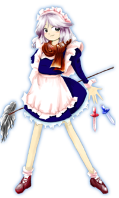

- Welcome to Touhou Wiki!
- Please register to edit. For assistance, check in with our Discord server or IRC channel.
Sakuya Izayoi
Sakuya Izayoi izajoi sakɯja (♫) | |
|---|---|
|
Sakuya Izayoi in Double Dealing Character Maid of the Scarlet Devil MansionMore Character Titles | |
| Species | |
| Abilities |
Time manipulation |
| Occupation | |
| Location | |
Music Themes | |
| |
Appearances | |
| Official Games | |
| |
| Print Works | |
| |
| Miscellaneous Works | |
{kind=link}
Sakuya Izayoi (十六夜 咲夜 Izayoi Sakuya) is the Chief Maid who serves Remilia Scarlet, the head of the Scarlet Devil Mansion. She is the only human living in the Scarlet Devil Mansion.[1][2]
General Information[edit]
Sakuya first appeared as the Stage 5 boss in Embodiment of Scarlet Devil. She appeared in Perfect Cherry Blossom as a playable character and in Imperishable Night as Remilia's partner along with being in the new fighting game Immaterial and Missing Power. Later, she appeared again as a playable character in Phantasmagoria of Flower View, Scarlet Weather Rhapsody and in Touhou Hisoutensoku. She was a playable character once again in Double Dealing Character.
She essentially takes the position of managing the Scarlet Devil Mansion. Her height is "tall"; she is taller than Reimu Hakurei and Alice Margatroid but about the same height as Yukari Yakumo and Hong Meiling.[3] She was not born in Gensokyo, and the name "Sakuya Izayoi" was given to her by Remilia Scarlet.[3] In Perfect Memento in Strict Sense, Akyuu guessed that she might have originally been a vampire hunter.
Personality & Age[edit]
Sakuya tends to be a little spacy, but it's unknown if its just an act. Her behaviour is that of an easy-going person and, although her personality can be seen as perfectly elegant, she possesses a little deviation that she is extra cautious about: inability to eat hot foods. From the dictionary, elegance means "refined, graceful". Refined means "cultured in manners and taste, as well as appearance" and Graceful means "sensible, sophisticated, neat, and without filth". She uses humble speech to her mistress Remilia Scarlet and friend Patchouli Knowledge, and uses less formal speech to other people.
As for her age, ZUN directly stated that "she plays the role of a human maid about 10 to 20 years old"[4] and "perhaps she is a character in her early teens[5], and in Perfect Memento in Strict Sense, according to Hieda no Akyuu, "she claims to be in her late teens", but acts with the mannerisms of someone and the level of her ability seems like that of a human that's been living for more than a hundred years. According to a quote from Remilia Scarlet and Sakuya's ending in Imperishable Night (Good Ending #3), Sakuya has been working at the Scarlet Devil Mansion for so long, Remilia doesn't feel it fitting to call her human. With a comment like that, it seems safe enough to assume she has been at the Scarlet Devil Mansion for an extremely long time.
Ability[edit]
- Manipulating time
Sakuya possesses the ability to manipulate time, where she's able to control the flow of time, such as speeding up time, slowing it down, erasing it, and stopping time altogether. She can also compress the flow of time to make both past and future to exist at the same time, making the same object from different timelines be in many places simultaneously[6][7]. The extent of her ability lets her not only control the time of the place in which she is, but influence the flow of time of a person, a specific object or even a small zone if she so desires, such as stopping the time of an object and thus affecting the space, making it stand still on thin air or creating time suspension fields where everything inside them will be affected by her ability; she can also accelerate or decelerate the movement of objects from slowed down speed to incredibly high speed, to even reaching the speed of light, making it move at tremendous speed. However, as it is difficult to reverse events that have already occurred, and since she is not able to return broken things to how they were originally even if she reversed time, in reality, it is not possible to reverse time.[1][8] However, she is able to do things to the extent of moving things back to where they were originally.[1] She has shown the ability to erase time of an object from a respective timeline; such as erasing bullets of the present and then the future, making them non-existent. [9]
She is also able to manipulate space,[1][10] and can narrow or lengthen it: she made the Scarlet Devil Mansion, which was originally spacious, even more abundantly spacious, and furthermore just like this she cleans alone. ZUN also said that "Manipulation of Time" is synonymous with "Manipulation of Space" (as it's well-known space and time are related as a 4-dimensional Lorentzian space within a pseudo-Riemannian manifold). By manipulating space-time, Sakuya is able to create parallel universes to some degree of extent, allowing her to make another Sakuya appear in front of her, which will execute a different action to that of the original, and thus creating a time paradox.[11]
According to Perfect Memento in Strict Sense, the power to control time is a power that a human can possibly have, but isn't acquired just from just training. In the games, using this ability, she scatters an infinite quantity of knives. To disclose the secret of this trick, she stops time and assiduously collects the knives.
Hieda no Akyuu believes Sakuya has managed to live so long while still looking like a teenager by manipulating time. It's true that Sakuya can increase the speed at which something ages, such as making bamboo flowers bloom instantly in Marisa's A ending of Embodiment of Scarlet Devil, even though this would normally take sixty years. It seems safe enough to assume she can decelerate aging for a specific object, too.
Despite the seemingly reality bending effects of her time manipulation, by Sakuya's own admission her ability to stop time is actually her moving at extremely high speeds with no mass and that she lacks the ability to stop someone else's time.[12]
Occupation[edit]
As the head maid, she oversees all the fairy maids as the only human maid. The other maids have many perks to their jobs and rarely choose to leave (even though they are not paid or given vacations); however, they are nearly useless and most of the work is done by Sakuya alone, which would be impossible if she didn't stop or slow time. She shops at the Human Village, but she is cold toward other humans and has no friends there. However, ever since Remilia Scarlet was beaten by the heroine of Embodiment of Scarlet Devil, Sakuya has begun opening herself up more.
At the time of Embodiment of Scarlet Devil, she merely worked at the Scarlet Devil Mansion in return for food. Continuing in Imperishable Night, she did not worry at all about the clothing, food or housing and felt satisfied.[13] Meanwhile, she is utterly devoted to her mistress.[14] She's constantly seeking out new varieties of tea flavours for Remilia to try, as shown in several official works. For example, she mentions in Phantasmagoria of Flower View that with so many flowers around, she can make as much tea and as many pastries as she wants. (Flowers have often been used to provide flavouring for tea, especially in the past, and are still the basis of jasmine tea.)
Theoretically, Sakuya is the fifth character to serve as a maid in the Touhou Project. The other maid characters are Ruukoto, Mugetsu, Yumeko and Alice Margatroid. However, due to the fact that Mugetsu is probably not a maid, Sakuya would be the fourth maid in the Touhou Project.
Possessions[edit]

She possesses a great amount of silver[1][14] throwing knives and is skilled at handling them, and with only her ability to manipulate time[15], she is skilled in conjuring knives from nowhere.[1][16][17]
Her throwing range is said to be 20 ken (about 36 meters or 39.8 yards) and has the accuracy such that she is able to strike an apple on the forehead of a fairy. A portion of her throwing-knife ability is within her cooking ability and therefore is very skilled at cooking as well.[16] She also is able to conjure knives in battle as danmaku as well. In the games, despite Sakuya showing to make knives appear mysteriously when time is stopped, her artwork in The Grimoire of Marisa shows that she's placing the knives physically.
Backstory[edit]
ZUN has stated in his e-mails that Sakuya is not her real name and that she is not from Gensokyo. According to her profile in Embodiment of Scarlet Devil, her power to control time distanced her from humans, and she eventually gave up trying to be friendly with them.
It is unknown how she came to work for the Scarlet Devil Mansion.
Character Basis[edit]
Name[edit]
Her full name is Sakuya Izayoi (十六夜 咲夜), which was given to her by Remilia Scarlet. The characters for Izayoi (十六夜) literally means "Sixteenth night" (the night just after that of the full moon), and Sakuya (咲夜) literally means "Flowering night". The Japanese word for "last night" (昨夜) can also read as Sakuya, which would point towards the night of the full moon. The word for "night of the new moon" (朔夜) can also read as Sakuya, which is possibly related to the ability to manipulate time. The word Izayoi (十六夜) has come to mean "sixteenth night" from the expression "izayou tsuki" (いざよう月), where "izayou" means "not to progress/proceed forward at all", which might have a deep connection to her ability as well.
Design[edit]
Sakuya was first seen in Embodiment of Scarlet Devil. In this game, she was seen with bright red eyes, silver hair worn in long braids on both sides of her face with green bows at the ends and a white maid headband. She wears a pink/white and dark blue French maid's outfit with an apron, short sleeves and a green ribbon. She is also seen carrying three knives and the phrase "Red Magic" appears to be embroidered on her left sleeve.
Later in Perfect Cherry Blossom, when choosing a player, Sakuya appears to have grey eyes, blue colored long sleeves and a red scarf. She also has red shoes and two knives, one blue and one red. However, her appearance in-game shows her having blue eyes. She's wearing such clothing because it was effectively winter during the game.
Her appearances in Immaterial and Missing Power, Imperishable Night and Scarlet Weather Rhapsody are very similar. Sakuya is seen with grey eyes and once again wearing short sleeves. She appears to the have a thin black ribbon on the maids outfit. However in Imperishable Night she holds a knife and an old stopwatch, where as in Scarlet Weather Rhapsody, she has three knives and a plate with cups and a teapot on it. The colour of her eyes changes with each work.
In Phantasmagoria of Flower View, she has dark blue eyes and long sleeves. The Roman numerals for I (1) through XII (12) line the bottom of her apron.
Alternative Outfits[edit]
Her alternative outfit in Immaterial and Missing Power and Scarlet Weather Rhapsody is mainly light blue with a white apron and her hair is light green. In Phantasmagoria of Flower View, her outfit is mainly dark red instead of dark blue.
Mystery and Theory[edit]
Sakuya Izayoi is a character that holds a few mysteries. These are theories among the fanbase about the Touhou Project that may or may not be true on most cases. This section will concerns a well-known mysteries in relation to Sakuya Izayoi. These are to be noted to only use official material, and a caveat can be suggested to be conjectures on most parts. Hieda no Akyuu states there are several theories regarding Sakuya's origins and/or behaviour (including she is a homunculus, a zombie, or an eccentric).[1]
Sakuya's Species[edit]
ZUN's E-mails has referred to her as human, as do most of her official profiles. In Perfect Memento in Strict Sense, Hieda no Akyuu considers Sakuya as a human, but wonders if she is not actually from Gensokyo, but perhaps one of many other worlds including Higan, the Netherworld, the Lunar Capital, and the outside world. Reimu Hakurei questions her humanity in Embodiment of Scarlet Devil, but throughout the series Sakuya insists and refers to herself as a human very often. Perfect Memento in Strict Sense states her ability to control time is an extremely powerful ability for a human to possess. Sakuya doesn't seem to react abnormally regarding to either the Lunarians from the Moon or the Moon itself in any official work, nor does any "alien" in regards to Sakuya. For example, Watatsuki no Yorihime doesn't show any recognition of her.
- In relation to Sakuya's eyes been red
In Embodiment of Scarlet Devil, and possibly Immaterial and Missing Power and Scarlet Weather Rhapsody's spell cards, there are parts when her eyes become red. In Embodiment of Scarlet Devil, it may possibly be due to the Scarlet Mist Incident, but it was inferred that those were to manipulate the eyes of insanity. In Imperishable Night, at the scene where Remilia Scarlet worried that Sakuya might become insane at the time Kaguya cast the light of the true full moon, even when Sakuya looked at the true full moon there did not seem to be any abnormality caused by the full moon. However, Imperishable Night's Good Ending #3 indicates Sakuya went a bit mad. Additionally, ZUN drew Sakuya with red eyes shortly after the release of IN, and answered a fan's question about her red eyes in the picture, stating that they should play through the game to understand. The implication here is that Sakuya did indeed go mad. That being said, Reimu Hakurei and Marisa Kirisame passed through seeing the moon just fine, although they had their own reasons as to why they don't become insane.
{kind=link}
- In relation to Konohana-Sakuyahime
ZUN has said that the contents of Touhou Bougetsushou contained a hint as for the reason why Eirin Yagokoro was surprised at seeing Sakuya. In Cage in Lunatic Runagate, there appeared another character with the same first name, Konohana-Sakuyahime. If Eirin is indeed Yagokoro Omoikane no Kami, she would know Konohana-Sakuyahime since the latter is the wife of Ninigi-no-Mikoto, Omoikane's nephew. Thus, the fact that Sakuya shares the same name as her nephew's wife would be a reason why Eirin was surprised.
Since the two share the same first name though, there's a possibility that Sakuya is based off of Konohana-Sakuyahime or at least in some other way related. In the Kojiki, Konohana-Sakuyahime was written as "木花之佐久夜", where the "夜" corresponds to the "ya", therefore making every part of the name "Sakuya" with a basis in Konohana-Sakuyahime. Furthermore, there were tales related to Konohana-Sakuyahime where she can be seen to be controlling time like Sakuya, like the tale of the one-night pregnancy and the delivery in the middle of fire.
Vampire Hunter[edit]
Sakuya being a vampire hunter is a theory that's the widely accepted by Akyuu, based on the fact that her silver knives are the same kind used to slay vampires and other demons. Silver is one of the prime weaknesses of vampires.
The theory that was said by Akyuu claims that long ago, a young vampire hunter was training herself, defeating smaller demons in an unknown location, but never had the chance to fight a vampire. Confident in her abilities, she decided to set out on a journey to slay vampires and ended up at the Scarlet Devil Mansion. There she saw Remilia Scarlet, who was surprisingly strong, and Remilia easily defeated her. However, Remilia wanted the girl's power for herself, so she spared her life and gave her a new name, which also gave her a completely opposite fate: Sakuya Izayoi. Sakuya then became the head maid of the Scarlet Devil Mansion before it was moved to Gensokyo. This may also have some relation to her species theory.
Human Cuisine[edit]
Sakuya's involvement in the human cuisine of the Scarlet Devil Mansion is unknown. All official details regarding this topic can be interpreted both ways. In other words, there exists neither confirmation nor denial that Sakuya prepares humans. The Scarlet Devil Mansion has humans to eat. While Sakuya has never been shown preparing humans, it's stated that all other maids in the mansion are practically useless and Sakuya is the one who does all the work. This heavily implies that she is involved in cooking as well since it's one of the biggest duties in a household.
Flandre Scarlet confesses to Reimu Hakurei in Embodiment of Scarlet Devil that she has no idea who prepares her human food, but doesn't think it's Remilia. Her profile confirms the pastries she eats are made from humans, but doesn't say who prepares the pastries. In Wild and Horned Hermit Chapter 11, Sakuya comments at the flower viewing party, "It's been a while since I've seen such seedy-looking food. I usually see steaks dripping with blood."
Music comments in Embodiment of Scarlet Devil by ZUN state that Remilia's tea is blood. In Strange and Bright Nature Deity, Sakuya asked Remilia if she thought her latest (not humans) tea tasted like blood. Also, Sakuya's ending in Immaterial and Missing Power mentions that tea time is usually "red tea".
Eiki Shiki lectures that Sakuya's sin is coldness towards humans, and Sakuya answered with "That would be because the only thing I touch humans with would be my cold steel." This particular conversation confirmed two things: (a) Sakuya generally doesn't try to be friends with humans, and (b) when she comes into contact with them, blades would be involved. The second piece of information could mean her knives in danmaku battles with Reimu and Marisa, or that she does cut humans during meal preparation.
The idea is possibly alluded to in chapter 35 of Wild and Horned Hermit, in which, faced with Reimu's accusation that she's the one behind the sudden disappearances of the Human Village people because of Remilia's need for blood, Sakuya jokes that it didn't occur to her to kidnap people that way and then denies her involvement in the case on the basis that the kidnapped people come back unharmed the next day with no recollection of what they were doing during that time, stating that her time manipulation powers cannot stop the flow of time for people other than herself.
Performing a Jack-the-Ripper-like act[edit]
Sakuya's spell card names are all mostly like Illusion Sign "Killing Doll" that are dangerous and disturbing without limit. Moreover, in the preparing of tea and cake for Flandre Scarlet, humans are normally eaten, and since Sakuya does most of the cooking for the Scarlet Devil Mansion, it can be perceived as Remilia Scarlet having employed a Sakuya who has become accustomed to murdering people. There do seem to be things that are surely related to a character modelled off of Jack the Ripper.
Her cut-in image in Embodiment of Scarlet Devil has a knife holster attached above her left knee, that looks like it is most likely for a dagger than a throwing knife. This is probably a depiction from which one could guess that Sakuya is left-handed. However, there has been no official statement about her handedness so far. There are also theories for why the unidentified Jack the Ripper might be female (in which case, she would be called Jill the Ripper)[18][19].
Story[edit]
Games[edit]
- the Embodiment of the Scarlet Devil
During Embodiment of Scarlet Devil Sakuya attempts to prevent the heroine from reaching her mistress, but fails.
- Main article: Reimu Arc
Sakuya is cleaning when Reimu interrupts her and demands Sakuya to bring her to her mistress. Sakuya refuses to put Remilia in danger and faces against Reimu.
- Main article: Marisa Arc
Sakuya is cleaning when Marisa comes in and muses at Sakuya's maid position. Sakuya deadpans about Marisa's magician class and after a rather amusing discussion on Marisa "application", the ruse is uncovered and they fight.
- Perfect Cherry Blossom
- Main article: Perfect Cherry Blossom Sakuya's Scenario
Later, during Perfect Cherry Blossom, Sakuya is able to show more of her true character, even if her main reason for trying to solve the problem is that the delayed Spring will affect her too. Sakuya wants no distractions and to quickly find the culprit, unfortunately for her, she gets into a full fledged adventure.
- Imperishable Night
- Main article: Imperishable Night Scarlet Team's Scenario
Remilia gets fed up at Sakuya's inability to catch her subtle hints to fix the Moon. Sakuya faithfully follows her disgruntled mistress into the night.
- Phantasmagoria of Flower View
- Main article: Phantasmagoria of Flower View Sakuya's Scenario
Sakuya wanders about but this time more for her inquiring nature rather than actually solving the incident.
- Double Dealing Character
- Main articles: Sakuya A Scenario and Sakuya B Scenario
Sakuya discovers that some of her silver knives started acting up and have become independent. Meanwhile, youkai at the Misty Lake have been running a rampage, so Sakuya goes out to test her new knives.
Spin-off[edit]
- Immaterial and Missing Power
- Main article: Immaterial and Missing Power Sakuya's Scenario
Sakuya realizes the air is charged with some strange power and investigates on what could it be.
- Shoot the Bullet
In Shoot the Bullet, Aya Shameimaru encountered Sakuya on stage 7 and took photos of her danmaku.
- Scarlet Weather Rhapsody
- Main article: Scarlet Weather Rhapsody Sakuya's Scenario
During the events of Scarlet Weather Rhapsody, she is initially commanded by Remilia Scarlet to find possible suspects behind the strange weather. After Remilia grows tired of "questioning" suspects, she orders Sakuya to personally find and deal with the culprit. After doing so, Sakuya tells Reimu where to find the culprit, and latter helps to rebuild the Hakurei Shrine after it is destroyed for the second time.
- Touhou Hisoutensoku
- Main article: Touhou Hisoutensoku Story
If connecting SWR with Touhou Hisoutensoku, then Sakuya can become a selectable character to play with, although she appears in no scenarios.
- Hopeless Masquerade
Sakuya appears as a background cameo in Hopeless Masquerade on the Hakurei Shrine stage. She standing with Remilia Scarlet and Patchouli Knowledge holding a tray with tea on it.
- Impossible Spell Card
- Main article: Impossible Spell Card: Story
After apparently reading the newspaper by the tengu about a mischief-making amanojaku, she becomes one of the many strong youkai and humans to try and stop Seija Kijin. She uses spell cards that are considered impossible to dodge.
Literature[edit]
- Bohemian Archive in Japanese Red
- Main article: Bohemian Archive in Japanese Red/Sakuya
The article reports of Sakuya sneaking into Marisa Kirisame's house and stealing various objects with the intent of building a rocketship to travel to the moon. Sakuya explains her odd behavior by claiming she is only carrying out Remilia's request.
In the interview, Aya Shameimaru asks to speak to Remilia to find out why she wanted those items, but in stalling Sakuya, she is late in delivering tea to Patchouli Knowledge, who arrives to see what the hold-up is. Patchouli explains that they were going to use the items for a magic spell which would send them to the moon, but it ultimately proved useless in the end. The interview ends with Sakuya inviting Aya to join them for tea-time.
- Wild and Horned Hermit
Remilia reacts to Reimu's new event of Mamemaki for Setsubun (an event where people throw beans to drive away the onis) and decides to make her own festival without the beanthrowing in which Sakuya aids with the preparation. Kasen learns that the vampire is also weak against beans and decides to pay them a visit in which Sakuya kindly welcomes her and tell her about the festival. After Reimu's change of mind, the Scarlet Devil Mansion cancels its own festival and sets up a sushi stand at the Hakurei Shrine.
- Forbidden Scrollery
Sakuya goes to the Hakurei Shrine looking for Remilia's new pet, a supposed Tupai, which seems to have disappeared. Later, she goes along with Reimu to Suzunaan to research about the creature. After Hieda manages to capture it and reveal it was actually a Chupacabra, Sakuya returns it to the Scarlet Devil Mansion.
Relationships[edit]
As a playable character in several games, Sakuya has met a large number of characters. Generally, she treats everyone with professional politeness fitting of a perfect and elegant maid, but youkai that get in her way while she is resolving incidents are coldly exterminated.
Residents of the Scarlet Devil Mansion[edit]
Sakuya is loyal to Remilia Scarlet and serves her as the Head Maid without question, a servitude in which no one knows why either trust each other so much. She follows Remilia's requests even when she knows it won't work, such as catching Lily White to restore Spring in Strange and Bright Nature Deity, as requested by her mistress. When Remilia playfully criticizes Sakuya for her failure to catch spring, she takes it in good stride and doesn't disagree. She will also do things for Remilia which she won't even ask, like accompanying her in Imperishable Night and Immaterial and Missing Power (or trying to, in the latter case), or putting on a sleight-of-hand magic show for Remilia without warning in Curiosities of Lotus Asia. Remilia has said that Sakuya is an excellent cleaner, though not before contrarily stating that humans are useless. On occasion, she's more a babysitter than a maid. She chastises Remilia in her Scarlet Weather Rhapsody and Immaterial and Missing Power victory quotes for sneaking out food or playing around too much.
Hong Meiling is a fellow employee who she pesters about her work productivity as shown in Immaterial and Missing Power and Touhou Hisoutensoku victory quotes. Meiling seems easily frightened when Sakuya shows even a slight bit of anger as shown in Strange and Bright Nature Deity. However, in Meiling's Touhou Hisoutensoku ending, when Meiling is found passed out and asleep, Sakuya takes Meiling inside because she is worried Meiling will get heatstroke.
She also serves Patchouli Knowledge since Patchouli rarely leaves her room. Sakuya has the highest authority as chief maid[1], yet Patchouli's rank is noticeably higher within the Scarlet Devil Mansion. Sakuya may also be serving her because Patchouli is Remilia's friend, though she does care for Patchouli personally. In Silent Sinner in Blue, she takes a private moment to watch and smile at Patchouli, who's blissfully unaware as she's researching a new magical breakthrough.
Koakuma is simply a fellow employee of the Scarlet Devil Mansion and presumably nothing more.
On top of serving Remilia, she presumably serves her younger sister Flandre Scarlet, who is usually not allowed out of Scarlet Devil Mansion due to her emotional instability. However, this is not stated, implied, or depicted in any official work. Someone prepares Flandre's food, which are humans prepared in the shape of pastries and other pleasant things, but it is never stated to be Sakuya.
As the head maid, Sakuya has precedence over all the other Fairy Maids of the Scarlet Devil Mansion. She is familiar with every each one and notices any abnormality such as the Three Fairies of Light dressing up as three maids. Due to the poor work productivity of the fairies, Sakuya presumably does most of the work. An advertisement in Bohemian Archive in Japanese Red states that Sakuya interviews for recruiting, so she may have interviewed the majority (if not every) of fairy maids herself.
Marisa Kirisame[edit]
Despite Marisa Kirisame's tendency to "borrow" books from the library, Sakuya has shown on a few occasions (mainly endings) to be quite friendly with Marisa, going so far as to serve her snacks and tea and hiding her from Patchouli. This may explain Patchouli's low "catness" rating in Immaterial and Missing Power.
Residents of Eientei[edit]
From the events of Imperishable Night, Sakuya is one of the few people who know that Eirin Yagokoro and Kaguya Houraisan are from the moon, and presumably keeping it a secret. Eirin's profile states Eirin is surprised to see Sakuya, but only Eirin knows why. Sakuya has not shown any abnormal interactions or familiarity with Eirin that could hint at what this is (she was suspicious of Eirin during the rocket party in Inaba of the Moon and Inaba of the Earth, but so was everyone who knew Eirin was from the moon).
ZUN's only hint in regards to this can be seen above in the section about Konohana-Sakuyahime.
Minor Relationships[edit]
Sakuya met them in an omake in Eastern and Little Nature Deity, where she stops their prank by throwing some knives at them. In Strange and Bright Nature Deity, at the mansion, she saw through their maid disguises but didn't say a word and let them stay. She eventually kicked them out (according to the fairies' conversation) or frightened them out by telling them if they don't work, they don't eat. Sakuya was smiling, so she may have been speaking as-a-matter-of-factly.[Ref. Needed] Later, when they're spying on Sakuya and others at the Hakurei Shrine, she sees them, revealing she can see through their abilities to hide themselves even though Reimu Hakurei and Marisa Kirisame cannot. She cheerfully invites them to join, but this only scares them into running away, which disappoints her.
Ever since Perfect Cherry Blossom, Sakuya attacks Alice whenever either visit each other's house, and for no good reason. Sakuya says she's attacking in Immaterial and Missing Power to release stress. In Scarlet Weather Rhapsody, she says it's to punish Alice for intruding even after Alice has already left. In both cases, Alice thought it was a poor reason. In comparison, Marisa Kirisame and Youmu Konpaku don't even get into trouble when caught intruding in the mansion (in fact, they usually get tea, instead)[20].
Sakuya has trouble understanding why Cirno finds freezing frogs or flowers fun in Phantasmagoria of Flower View, but at least came to understand fairies' recklessness from watching Cirno fight in Touhou Hisoutensoku. Cirno does not want to be a fairy maid.
Gallery[edit]

Sakuya in Curiosities of Lotus Asia

Sakuya in Curiosities of Lotus Asia
Illustration of Sakuya in Bohemian Archive in Japanese Red

Another illustration of Sakuya from Bohemian Archive in Japanese Red
Sakuya artwork from Embodiment of Scarlet Devil
Sakuya artwork from Embodiment of Scarlet Devil
Sakuya artwork from Perfect Cherry Blossom
Sakuya artwork from Immaterial and Missing Power
Sakuya artwork from Imperishable Night
Sakuya artwork from Phantasmagoria of Flower View
Sakuya artwork from Scarlet Weather Rhapsody
Sakuya artwork from Touhou Hisoutensoku
Sakuya in Strange and Bright Nature Deity
Sakuya and Remilia cameo in Extra of the Wind
Sakuya in Silent Sinner in Blue
Sakuya in Silent Sinner in Blue
Sakuya in Inaba of the Moon and Inaba of the Earth

Sakuya mummy costume in Oriental Sacred Place
Sakuya's sigil in The Grimoire of Marisa

Sakuya on the Vol. 5 cover of Wild and Horned Hermit
Sakuya's different color palettes from Touhou Hisoutensoku. The middle top corresponds to her second color palette in Scarlet Weather Rhapsody, while the right top corresponds to her Immaterial and Missing Power palette
Sakuya's sigil from Touhou Hisoutensoku

Sakuya in the Strange Creators of Outer World Vol. 2 cover
Skills[edit]
| Name | Translated | Comments | Games | Usage | ||
|---|---|---|---|---|---|---|
| Total: 22 | ||||||
| 「ジャック・ザ・ルドビレ」 | "Jack the Ludo Bile" | PCB | Type A unfocused | |||
| 「ジャック・ザ・リッパー」 | "Jack the Ripper" | PCB PoFV |
Type A focused Charge attack | |||
| 「ミスディレクション」 ミスディレクション |
"Misdirection" | Related: Sakuya's Conjuring "Misdirection" (EoSD) | PCB Soku |
Type B unfocused Alternate 214B/C | ||
| 「パワーディレクション」 | "Power Direction" | PCB | Type B focused | |||
| 離剣の見 | Sense of Thrown Edge | IaMP | 236A/B | |||
| アンビシャスジャック | Ambitious Jack | IaMP | 236C | |||
| バウンスノーバウンス | Bounce No-Bounce | IaMP SWR |
214A/B Default 214B/C | |||
| クロースアップマジック | Close-up Magic | IaMP SWR |
623A/B Default 623B/C | |||
| バニシングエブリシング | Vanishing Everything | IaMP SWR |
421A/B/C Default 22B/C | |||
| 「ミステリアスジャック」 | "Mysterious Jack" | IN | ||||
| 「アナザーマーダー」 | "Another Murder" | PoFV | EX attack | |||
| マジックスターソード | Magic Star Sword | SWR | Default 236B/C | |||
| プロペリングシルバー | Propelling Silver | SWR | Alternate 623B/C | |||
| スクウェアリコシェ | Square Ricochet | SWR | Alternate 214B/C | |||
| 離剣の見 | Sight of Distant Blade | SWR | Alternate 236B/C | |||
| パーフェクトメイド | Perfect Maid | Related:Sakuya's Silver Sign "Perfect Maid" (StB) | SWR | Alternate 22B/C | ||
| パラレルブレーン | Parallel Brane | Soku | Alternate 236B/C | |||
| ダンシングスターソード | Dancing Star Sword | Soku | Alternate 623B/C | |||
| タイムパラドックス | Time Paradox | Soku | Alternate 22B/C | |||
| スローイングナイフ | Throwing Knives | DDC | Unfocused | |||
| 妖剣シルバーブレード | Bewitched Sword 'Silver Blade' | DDC | Type A focused | |||
| スマートロバー | Smart Robber | DDC | Type B focused | |||
Spell Cards[edit]
| Name | Translated | Comments | Games | Stage | ||
|---|---|---|---|---|---|---|
| Total: 39 | ||||||
| 奇術「ミスディレクション」 | Conjuring "Misdirection" | EoSD | St. 5: E/N | |||
| 奇術「幻惑ミスディレクション」 | Conjuring "Mesmerizing Misdirection" | EoSD | St. 5: H/L | |||
| 幻在「クロックコープス」 | Illusion Existence "Clock Corpse" | EoSD | St. 5: E/N | |||
| 幻象「ルナクロック」 | Illusion Image "Luna Clock" | EoSD GoM |
St. 5: E/N — | |||
| メイド秘技「操りドール」 | Maid Secret Skill "Manipulating Doll" | EoSD | St. 5: E/N | |||
| 幻幽「ジャック・ザ・ルドビレ」 | Illusion Phantom "Jack the Ludo Bile" | EoSD | St. 5: H/L | |||
| 幻世「ザ・ワールド」 | Illusion World "The World" | EoSD | St. 5: H/L | |||
| メイド秘技「殺人ドール」 | Maid Secret Skill "Killing Doll" | EoSD GoM |
St. 5: H/L — | |||
| 奇術「エターナルミーク」 | Conjuring "Eternal Meek" | EoSD SWR |
St. 6: N/H/L | |||
| インディスクリミネイト | "Indiscriminate" | PCB | Use | |||
| 殺人ドール | "Killer Doll" | PCB | Use | |||
| パーフェクトスクウェア | "Perfect Square" | PCB | Use | |||
| プライベートスクウェア 時符「プライベートスクウェア」 |
"Private Square" Time Sign "Private Square" |
PCB IaMP SWR |
Use Use Use | |||
| 幻符「殺人ドール」 | Illusion Sign "Killing Doll" | IaMP IN SWR |
Use Use Use | |||
| 幻葬「夜霧の幻影殺人鬼」 | Buriallusion "Phantomic Killer in Night Mist" | IaMP IN SWR |
Use Use Use | |||
| 「咲夜の世界」 | "Sakuya's World" | IaMP SWR |
Use Use | |||
| 傷符「インスクライブレッドソウル」 | Wound Sign "Inscribe Red Soul" | IaMP SWR |
Use Use | |||
| 傷魂「ソウルスカルプチュア」 | Scarred Soul "Soul Sculpture" | IaMP SWR |
Use Use | |||
| 符の壱「連続殺人ドール」 | First Card "Serial Killing Doll" | IaMP | Story | |||
| 符の弐「チェックメイド」 | Second Card "Checkmaid" | IaMP | Story | |||
| 手品「クロースアップ殺人鬼」 | Jugglery "Close-Up Serial Killer" | IaMP | Story | |||
| 「デフレーションワールド」 | "Deflation World" | IN GoM |
LW — | |||
| 時符「プライベートヴィジョン」 | Time Sign "Private Vision" | PoFV | Use | |||
| 時符「ミステリアスジャック」 | Time Sign "Mysterious Jack" | PoFV | Use | |||
| 時符「トンネルエフェクト」 | Time Sign "Tunnel Effect" | StB GoM |
St. 7 — | |||
| 空虚「インフレーションスクウェア」 | Void "Inflation Square" | StB GoM |
St. 7 — | |||
| 銀符「パーフェクトメイド」 | Silver Sign "Perfect Maid" | StB | St. 7 | |||
| 銀符「シルバーバウンド」 | Silver Sign "Silver Bound" | SWR SWR |
Use Story | |||
| 速符「ルミネスリコシェ」 | Speed Sign "Luminous Ricochet" | SWR SSiB |
Use Ch.14 | |||
| 時符「咲夜特製ストップウォッチ」 | Time Sign "Sakuya's Special Stopwatch" | SWR SWR |
Use Story | |||
| 幻術「マイナイフリカージョン」 | Illusion "My Knife's Recursions" | SWR | Story | |||
| 時符「シルバーアキュート360」 | Time Sign "Silver Acute 360" | SWR | Story | |||
| 時符「イマジナリバーチカルタイム」 | Time Sign "Imaginary Vertical Time" | Soku | Use | |||
| 時計「ルナダイアル」 | Watch "Lunar Dial" | Soku | Use | |||
| 光速「Ｃ． リコシェ」 | Light Speed "C. Ricochet" | Soku | Use | |||
| 妖器「銀色のアナザーディメンジョン」 | Bewitched Weapon "Silver Another Dimension" | DDC | Use | |||
| 時符「デュアルバニッシュ」 | Time Sign "Dual Vanish" | DDC | Use | |||
| 時符「タイムストッパー咲夜」 | Time Sign "Time Stopper Sakuya" | ISC | St. 7 | |||
| 時符「チェンジリングマジック」 | Time Sign "Changeling Magic" | ISC | St. 7 | |||
Additional Information[edit]
- Despite helping rebuild the Hakurei Shrine later in Scarlet Weather Rhapsody, Sakuya casually ignores Reimu Hakurei's donation requests for shrine upkeep in Immaterial and Missing Power, saying she doesn't believe in gods anyway.[21]
- Her alternate outfit in Immaterial and Missing Power and Scarlet Weather Rhapsody is a homage to Ruukoto, the first maid of the Touhou Project. In Touhou Hisoutensoku more alternate outfits were added, including a Suigintou palette and a Dio Brando palette.
Fandom[edit]
Sakuya is one of the most popular characters in the Touhou Project. She sometimes appears to be an icon for the Touhou Project and has appeared in many fangames, mostly as a playable character or a boss, and in other fan-made anime and artwork. She is also a target for various memes and jokes.
Official Profiles[edit]
|  | ○紅魔館のメイド 十六夜 咲夜（いざよいさくや） とあるお屋敷の瀟洒なメイド。時を操る程度の能力を持つ。 |
Maid of the Scarlet Devil Mansion Sakuya Izayoi |
| ○紅魔館のメイド 十六夜 咲夜（いざよい さくや） |
Maid of the Scarlet Devil Mansion Izayoi Sakuya Mainly she possesses the ability to manipulate time. She is a maid who works at the Scarlet Devil Mansion on the banks of a lake in Gensokyo for no salary. She's kept quite busy in this mansion cleaning, commanding the other maids, cooking, and taking care of her mistress. The mansion is unnecessarily large and has monotonous colors, so it's hard to tell things apart inside. Nobody would notice if an uninvited guest wandered inside and fell into a hole somewhere, undiscovered. Nobody would know if they were discovered and gotten rid of, either. Somehow, this scarlet building doesn't seem out of place surrounded by the green of Gensokyo. It simply stands there as if it were always meant to be there. Living here, even Sakuya feels as if time has stopped. Of course, that's not because Sakuya has stopped time. |
| ○紅魔館のメイド 十六夜 咲夜（いざよいさくや） |
Maid of the Scarlet Devil Mansion Izayoi Sakuya
A maid who works and lives in the Scarlet Devil Mansion . She does a maid's duty perfectly: cooking, cleaning, washing, babysitting, knife throwing, etc. Her position is chief maid. Her personality seems perfect and elegant, but sometimes she shows a more spaced-out side. The reason she works so quickly is probably because she stops time to do it, though ... She also specializes in melee attacks. Probably even more so than at suspicious tricks like danmaku.
This is why she uses throwing knives in her danmaku. In addition, she likes magic that doesn't have tricks to it, so she proactively adopts it into battle. I can't help feeling this point is the odd acts. |
| ○紅魔館のメイド 十六夜 咲夜（いざよいさくや） 悪魔に仕えるメイドさん。 |
Maid of the Scarlet Devil Mansion Izayoi Sakuya A maid who serves a devil. Her weapon is throwing knives. Since silver is hard to come by, she's looking for other materials to use, too. Notes: |
| ○紅魔館のメイド 十六夜 咲夜（いざよい さくや） |
Maid of the Scarlet Devil Mansion Sakuya Izayoi Species: Human There's a scarlet mansion on the banks of a certain lake in Gensokyo. She works there as a maid. When you're a maid, you don't have to worry about clothing, food or housing, even when you live this deep in the mountains. She's human, but both humans and youkai don't look too well on her since she lives with devils. Still, some humans will overlook this, and she never has to worry about her living conditions. She can't imagine a life better than this. |
| ○完全で瀟洒なメイド 十六夜 咲夜（いざよいさくや） 悪魔に仕えるメイドさん。 |
Perfect and Elegant Maid Izayoi Sakuya
|
| ○完全で瀟洒なメイド 十六夜 咲夜（いざよい さくや） |
Perfect and Elegant Maid Izayoi Sakuya
|
| ○完全で瀟洒な従者
十六夜 咲夜（いざよい さくや）
職業：メイド 住家：紅魔館 能力：時を操る程度の能力 性格：瀟洒で知的、垢抜けている。 でも案外うっかりした行動をとる事もある。 |
Perfect and Elegant Servant Sakuya Izayoi
Occupation: Maid Place of residence: Scarlet Devil Mansion Ability: Manipulating time Personality: Elegant, knowledgeable, and refined. However, can be surprisingly careless from time to time. |
| 十六夜 咲夜（いざよい さくや） 人間／時間を操る程度の能力 紅魔館に住むただ１人の人間。多くの妖精メイドたちを束 時間を操る能力を持ち、レミリアからの信頼も厚い。だが、 |
Sakuya Izayoi Human / Ability to manipulate time Only one human lives in Scarlet Devil Mansion. She possesses the ability to manipulate time and got deep trust from Remilia. But the reason why Sakuya, a human, is working at the Scarlet Devil Mansion is wrapped in mystery. |
| ○悪魔のメイド 十六夜 咲夜（いざよい さくや） 種族：人間 紅魔館にすむ、人間のメイド長。 最近、勝手に敵に向かっていく短剣を手に入れた。 そんな時、紅魔館の近くの霧の湖で妖怪が暴れているという |
Maid of the Devil Sakuya Izayoi
Ability: Capable of manipulating time The human head maid that lives in the Scarlet Devil Mansion. Recently, she has obtained knives that will aim towards enemies by themselves. Not long afterwards, rumors surfaced that youkai were acting rowdy at the Misty Lake near the Scarlet Devil Mansion. Sakuya goes to fight to try out her new knives. |
Official Sources[edit]
- 2002/08/11 Embodiment of Scarlet Devil - Stage 5 dialogue; Stage 6 dialogue; おまけ.txt
- 2003/08/17 Perfect Cherry Blossom - Sakuya's Scenario; キャラ設定.txt; Manual
- 2004/04/03-2004/05/01 Curiosities of Lotus Asia - Chapters 4, 5
- 2004/08/15 Imperishable Night - Scarlet Team's Scenario; Scarlet Team Extra Stage; キャラ設定.txt; Manual
- 2005/08/11 Bohemian Archive in Japanese Red - Article and Interview: Sakuya
- 2005/08/14 Phantasmagoria of Flower View - キャラ設定.txt
- 2005/10/01 Seasonal Dream Vision/A Beautiful Flower Blooming Violet Every Sixty Years
- 2006/02/10 Curiosities of Lotus Asia - Chapter 18
- 2006/05/26 Strange and Bright Nature Deity - Chapter 1
- 2006/12/27 Perfect Memento in Strict Sense - Sakuya Izayoi
- 2007/03/25 ~ 2007/04/26 Strange and Bright Nature Deity - Chapters 7-8
- 2007/06/08 ~ 2009/04/09 Silent Sinner in Blue
- 2007/12/26 ~ 2008/01/26 Strange and Bright Nature Deity - Chapters 15-16
- 2008/05/25 Scarlet Weather Rhapsody - chara.html
- 2009/07/28 The Grimoire of Marisa - Sakuya Izayoi's Spell Cards
- 2009/08/26 Oriental Sacred Place - Chapter 4
- 2012/12/26 Forbidden Scrollery - Chapter 3
- 2012/04/26 Forbidden Scrollery - Chapter 6
References[edit]
- ↑ 1.0 1.1 1.2 1.3 1.4 1.5 1.6 1.7 Perfect Memento in Strict Sense: Sakuya Izayoi
- ↑ 『三月精 第2部』「上海アリス通信 三精版 第5号」（『月刊コンプエース』Vol.7 p.275。実質的には「第6号」なのだが誤植で「第5号」になっている。単行本未収録）
- ↑ 3.0 3.1 ZUN's E-mails
- ↑ Embodiment of Scarlet Devil: おまけ.txt
- ↑ インターネットラジオ「萎えラジDNA コミケット72直前スペシャル」（2007年8月11日放送）でのZUNの発言
- ↑ Imperishable Night - "Deflation World"
- ↑ The Grimoire of Marisa - Sakuya Izayoi's Spell Cards
- ↑ Curiosities of Lotus Asia: Chapter 4–5
- ↑ Double Dealing Character
- ↑ ZUN's reply to messages on the former Gensou Bulletin Board 2
- ↑ "Alternate Skill Cards - Time Paradox"
- ↑ Wild and Horned Hermit: Chapter 35
- ↑ Imperishable Night: キャラ設定.txt
- ↑ 14.0 14.1 Imperishable Night: Manual
- ↑ ZUN's reply to messages on the former Gensou Bulletin Board 1
- ↑ 16.0 16.1 Perfect Cherry Blossom: Manual
- ↑ Immaterial and Missing Power: 上海アリス通信.txt
- ↑ Jill the Ripper
- ↑ Was Jack the Ripper a Woman?
- ↑ Cage in Lunatic Runagate Chapter 7
- ↑ Immaterial and Missing Power Sakuya's Scenario: "Too bad. I don't believe in gods."
| This page is part of Project Characters, a Touhou Wiki project that aims to write proper descriptions for all official characters of Touhou Project. Please keep the character page guidelines in mind when contributing. |